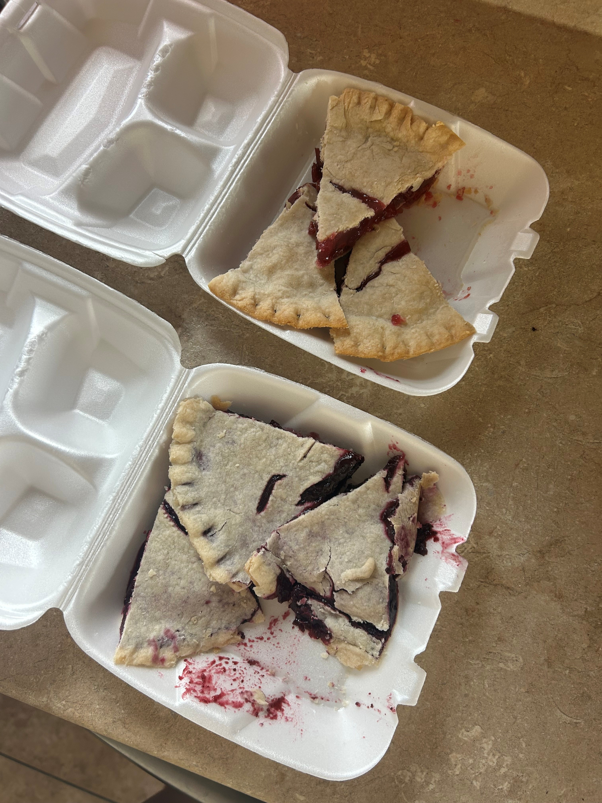

Kamara W:
"The food was melt in your mouth delicious. I went back for seconds and maybe even thirds!" She told us she spent hours searching the internet to find a recipe similar to our gluten free carrot cake cupcakes.
Other Flavors include:
- Vanilla
- Strawberry
- Chocolate
- Red Velvet
We wanted to share our findings too :)
Click Here for a Copy Cat Recipe!
Bradley and Kammie Z:
They used our catering services for their wedding last summer. They wanted options to serve all their guests and not have to worry about it. Kammie later told us:
"It was awesome to not have to worry about the section of what I could and could not eat. Everything was allergy-friendly."
Click here to see all our allergy accommodation offerings!
Keona G:
She experienced Khaana at her husband, Amir's, office party and knew she had to have the same catering at her own. She later told us
"I experienced the best pie and knew I had to recommend them for my Christmas party! The caterers and staff are so friendly and willing to help in any way. I also got to take some home and enjoy it."
Other popular events we cater for include:
- Weddings
- Graduation Parties
- Birthday Parties
- Conferences
